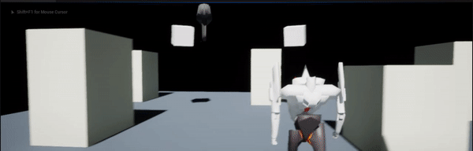
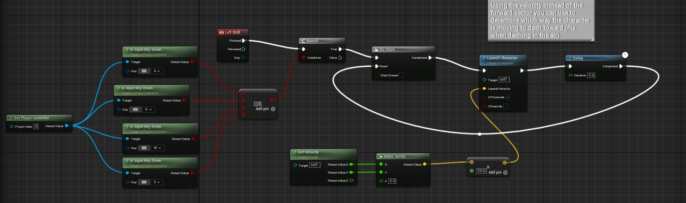
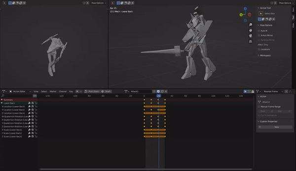

War-Angels is an in-development personal project being made in Unreal Engine 5, where you play as a Mech known as a War-Angel going against extraterrestrial threats while as having a Persona-esque character development when not fighting. The story, visuals and gameplay will be an homage to Mech games and as well 90's Mech Anime
Featuring a character-action focused gameplay with an emphasis in mastering movement, as the Mech works like a manual transmission car, having to change gears to change speeds of it. Additionally while the player is in the main hub can they interact with other characters, raising the stakes in the story.
Often post active updates of game on my twitter!: https://twitter.com/GreekYogurtFR
Project Responsibilities:
Lead Designer, in charge of the overall combat, movement and enemy and other current designs being developed.
Collaborating closely with sound designers to develop the soundtrack and Mech sounds for the game.
3D Models and Rigging, personally created the model for the Mech and rigged it myself in Blender.
Download.

A large part of what I want the core experience with the gameplay is feeling of increasing speed and and how that feels. Movement feel will be critical in making the Mech feel like this unstoppable force and here I'm current prototyping the movement mechanics and feeling them out, eventually interating on putting in the gear shifts to change the speed of the Mech. It's a little hard to see in the gif but small things like camera shake will be an important factor. I set this all up using the blueprints, making functions and micros for orginization.

Here's an example of the blueprint that houses the boosting mechanic for the game. I come from a scripting background such as Unity and C#, where directly writing down code is what I knew for awhile. However while working in visual scripts I still do my best to apply principles I learned while manually scripting, making sure things look neat visually and the lines/nodes look like a set of instructions while also incorporating comments to give context to both myself when I return to look at the code and bluescripts as well contex to others on the team that I collaborate with so they know exactly what I was going for here.

Here's a peak into Blender where I created the model and currently animating it, eventually to put them in Unreal. This is one of the main attacks of the Mech, out of a 3 hit combo the player would be able to do. I really wanted to emphasize the weight and power behind the Mech, so adding small touches like where inertia makes the Mech move a little more after the attack ends. This will help a lot for feel, which can't be emphasized enough when you're making a Mech game, as what seperates a Mech from just some robot suit is the WEIGHT! Which needs to be shown in all aspects of animation and especially when translated into gameplay.
This is a render I did in Blender for a few purposes; to establish how the scale will be in game for the Mech and concept out the visuals. In the final game I really want the art style to feel like it's from a 90's anime. In Unreal, I plan to use the material system to create shaders that have emphasis on toon-shading, outlines and as well whatever I can tinker with that'll create that '90s' look. My usual process to prototype visuals start in an art program like Blender and transfer what I feel looks good in Blender over to game engines.